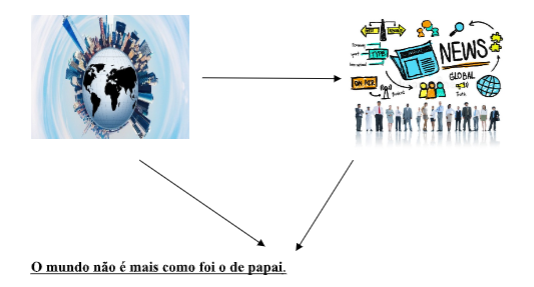
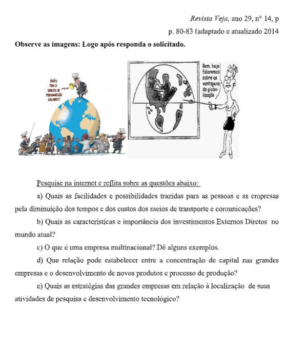

Capítulo 1: A globalização e seus efeitos na nova ordem mundial mundo multipolar
Questão:Como a globalização afetou as relações entre os Estados e os modos de consumo?
Contextualizando – Globalização, Metalúrgica e Indústria 4.0Além de todas as mudanças da transformação digital, a indústria 4.0 também está associada a outro movimento: a globalização 4.0. Mas o que isso significa? Trata-se de um fenômeno impulsionado pela tecnologia, que visa o movimento de ideias, pessoas e bens em todo o planeta. Dessa maneira, é possível reduzir disparidades no processo produtivo e de consumo, principalmente, considerando questões culturais, políticas, econômicas e sociais. Por isso, é preciso entender a transformação digital e o uso de tecnologias conforme a globalização. Uma pesquisa da Deloitte, com mais de 1,6 mil executivos em 19 países, ajuda a compreender essa perspectiva. De acordo com os dados, globalmente, 47% dos executivos usam tecnologias de ponta para aumentar a eficiência dos colaboradores. Enquanto isso, no Brasil, apenas 29% dos executivos têm essa percepção. Por outro lado, o Brasil está mais avançado no uso de tecnologias disruptivas na circulação de mercadorias e serviços. Uma vez que 26% dos gestores reconhecem essa necessidade de investimento, contra 20% em nível global. A questão da sustentabilidade é primordial no discurso sobre a indústria 4.0. Isso porque todas as empresas devem ter comprometimento com a preservação do meio ambiente. Sem contar que este é um fator determinante nas possibilidades comerciais de longo prazo. Mesmo as empresas que atuam localmente devem iniciar uma transformação digital nos negócios. Isso não é só necessário, como é essencial para manter as organizações competitivas e relevantes aos clientes. Então, adotar a transformação digital, com novas tecnologias e automação de processos, é fundamental para melhorar os resultados e aumentar a chance de expansão do negócio. Neste cenário, a capacidade de inovação também será determinante para as empresas conseguirem acompanhar e ajudar na construção de mudanças sociais.
Fonte: http://www.sbkbs.com.br/insights/globalizacao-e-industria-4-0/ 1) GlobalizaçãoÉ a ampliação das trocas de mercadorias, de informações e de culturas. Essa etapa é caracterizada pelas inovações tecnológicas e aceleração da difusão de informações. Um dos fatores que colaboram para o processo de globalização é a dívida externa que faz com que os países sejam obrigados a aceitar imposições dos países que emprestam dinheiro. Assim deixam de lado barreiras protecionistas o que facilita a entrada de empresas transnacionais nesses países. Assista ao vídeo e anote suas impressões sobre a relação entre tecnologia e globalização
Até o século XV, o mundo era considerado pequeno, ou seja, as economias- mundo ali presentes não interagiam entre si formando assim polos: Europa, China, Índia, África árabe e a América, segundo o historiador Fernand Braudel, eram áreas que atuavam economicamente praticamente isoladas.
-Primeira FaseNo século XV, com o fim do sistema feudal e com o renascimento cultural e urbano, as ciências saíram das mãos da Igreja Católica e passaram a serem controladas pelos, então recentes formados, Estados Nacionais. Com isso as mais diversas áreas da tecnologia começaram a se desenvolver e as barreiras naturais, que anteriormente eram intransponíveis (como os desertos, as grandes cadeias de montanha, etc.) já não eram mais obstáculos para o homem. Esse avanço favoreceu as grandes navegações e os continentes americano e africano passaram a fazer parte da economia do mundo de forma integrada com as demais regiões. Essa integração foi impulsionada pela busca de metais preciosos e de matérias-primas para a metrópole. A continuidade desse processo resultou na Primeira e na Segunda revolução Industrial que foi marcada principalmente pelo uso de novas energias motoras (vapor, eletricidade e combustível fóssil) e pelo avanço dos meios de transporte. Isso facilitou a integração da economia como também favoreceu os fluxos migratórios.
-Segunda FaseEssa fase está relacionada à expansão imperial europeia, ocorrida no fim do século XIX e início do século XX, e integrou ao mundo porções maiores da Ásia e da África. Nesse mesmo período temos a evolução de novos meios de comunicação como o telégrafo, rádio e o telefone, além dos avanços no transporte com a expansão das ferrovias, o uso dos automóveis e aviões, que contribuíram para ampliar e difundir as relações econômicas capitalistas.
- Terceira FaseEssa fase está relacionada diretamente ao período da Guerra-Fria, a corrida armamentista e espacial que movia as disputas entre EUA e URSS trouxeram grandes avanços tecnológicos, avanços esses que foram difundidos entre os países aliados às duas superpotências, contribuindo para estreitar ainda mais os laços entre as mais diversas culturas do mundo. A partir de 1970 teve início a revolução técnico-científico- informacional, baseadas nas indústrias de tecnologia avançada como a microeletrônica e a informática.
-Quarta Fase.Com a queda dos regimes socialistas o mundo passou por mais avanços nas áreas da comunicação e dos transportes, afinal o capitalismo se moldou para um modelo que não impunha barreiras comerciais, o livre comércio, isso causou o aumento da concorrência entre as mais variadas empresas que trouxeram novos meios de comunicação e de transporte mais rápidos e eficientes diminuindo ainda mais as distâncias temporais entre as mais diversas partes do globo. Esse processo contribui para que se formasse uma cultura global, porém mais ligada aos países desenvolvidos.
O desemprego é um grande problema do mundo globalizado, uma vez que o aumento da produção de mercadorias não acompanhou o crescimento do número de trabalhadores, o aumento da tecnologia também é responsável por isso justamente porque substitui a mão-de-obra pela máquina.
A sociedade de consumo é marcada pelo modelo de vida que busca definir as pessoas pelos bens materiais e não pelo conhecimento ou caráter. A grande discussão em torno do processo está em como manter culturas milenares dentro da sociedade.
1) O que é globalização?
2) Reflita e anote alguns aspectos positivos da globalização.
3) Quem se favorece mais com a globalização? Países ricos ou pobres? Por quê?
4) Para os países subdesenvolvidos quais as consequências negativas?
A globalização é um dos processos de aprofundamento internacional da integração econômica, social, cultural e política, que teria sido impulsionado pela redução de custos dos meios de transporte e comunicação dos países no final do século XX e início do século XXI.
O que é Globalização - ConceitoPodemos dizer que é um processo econômico e social que estabelece uma integração entre os países e as pessoas do mundo todo. Através deste processo, as pessoas, os governos e as empresas trocam ideias, realizam transações financeiras e comerciais e espalham aspectos culturais pelos quatro cantos do planeta. O conceito de Aldeia Global se encaixa neste contexto, pois está relacionado com a criação de uma rede de conexões, que deixam a distância cada vez mais curta, facilitando as relações culturais e econômicas de forma rápida e eficiente.
Ouve-se falar num mundo que as grandes corporações americanas estão demitindo dezenas de milhares de trabalhadores de olhos azuis e transferindo suas operações para países menores, de mão-de-obra mais barata. Outro momento, as novidades amargas vêm da Europa Ocidental. Numa região que conseguiu contornar as tensões do pós-guerra com a construção de uma rede de assistência social impecável e caríssima, o estado do bem-estar terminou quebrado e, ainda assim, o número de empregos disponíveis continua exatamente o mesmo nos últimos vinte anos. Países tão diferentes como a Espanha e a Finlândia enfrentam taxas de desemprego de quase 20% (...) Na segunda economia do mundo, a japonesa, vive-se uma recessão desde o início da década. As indústrias japonesas estão indo instalar-se em países com mão-de-obra mais barata, e, em casa, a taxa de desemprego oficialmente admitida é de 3,4%. No mundo do trabalho internacionalizado, o que mais há é desemprego. E quem fica à margem desse novo giro do capitalismo está condenado ao atraso e à miséria. (...) Não, não está em andamento um processo de decadência econômica. O mundo que produz e o que emprega não é mais o de vinte anos atrás, está girando mais depressa. (...) O que globalização está provocando todo esse misto de ansiedade e ressentimento se chama produtor vai comprar matéria-prima em qualquer lugar do mundo onde ela seja melhor e mais. É um processo de aceleração capitalista, num ritmo jamais visto em que o barata. Instala a fábrica nos países onde a mão-de-obra fique mais em conta, não importa se no Vietnã ou na Guatemala. Vende a mercadoria para o mundo inteiro. Em resumo: o entrelaçamento econômico das paróquias é um processo que começou na Pré- História, mas sempre progrediu em marcha lenta. Neste momento, está na velocidade da luz. Essa é a diferença. (...) Quando a máquina a vapor entrou em cena, ela também provocou um choque de aceleração produtiva. Passou a movimentar os teares — e um turbilhão de braços humanos perdeu sua função e seu emprego. Perplexos, assustados, chegaram a invadir fábricas para destruir as máquinas que os deixavam sem o ganha- pão. No século XVIII foi a máquina a vapor; No século XX, o motor da nova revolução foi a tecnologia, o aperfeiçoamento dos transportes e das comunicações. A tecnologia sempre se alterou, nunca tão depressa. (...) E as comunicações, em sua capacidade de conectar instantaneamente os pontos diferentes do planeta, tornaram as distâncias irrelevantes para as atividades empresariais. (...)
Uma das facetas da aceleração capitalista está no campo financeiro. (...) Cresceu 130 vezes em apenas duas décadas e meia. Esse dinheiro pode pertencer a um pequeno poupador japonês ou a um superinvestidor ... e está financiando coisas tão diversas como uma fábrica no Ceará ou o déficit público nos Estados Unidos. (...)
A outra faceta do processo de globalização está na indústria. Tomem-se as dez maiores corporações mundiais — Shell, Walmart, Exxon, Sinopec Group, China Petroleum, BP, State Grid, Toyota, Volkswagen, Total. Elas faturam 3,7 trilhões de dólares, o que equivale ao PIB conjunto de Brasil, México, Argentina, Chile, Colômbia, Peru, Uruguai e Venezuela. Se a conta se expande para as 100 maiores corporações,
A outra faceta do processo de globalização está na indústria. Tomem-se as dez maiores corporações mundiais — Shell, Walmart, Exxon, Sinopec Group, China Petroleum, BP, State Grid, Toyota, Volkswagen, Total. Elas faturam 3,7 trilhões de dólares, o que equivale ao PIB conjunto de Brasil, México, Argentina, Chile, Colômbia, Peru, Uruguai e Venezuela. Se a conta se expande para as 100 maiores corporações,
